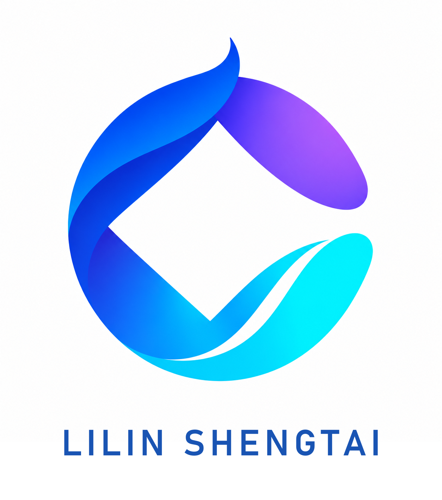
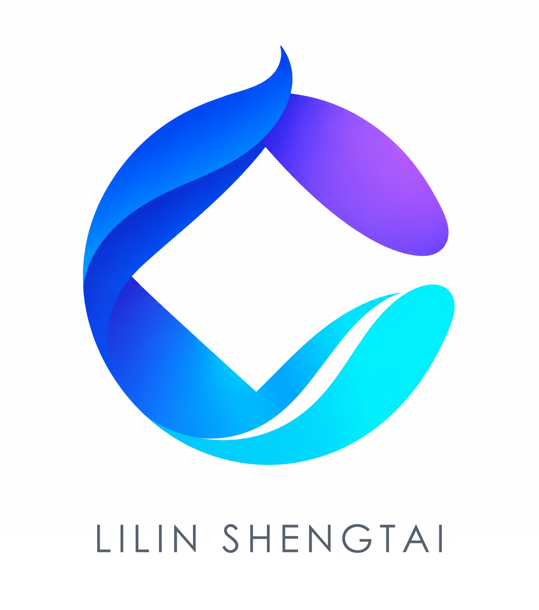
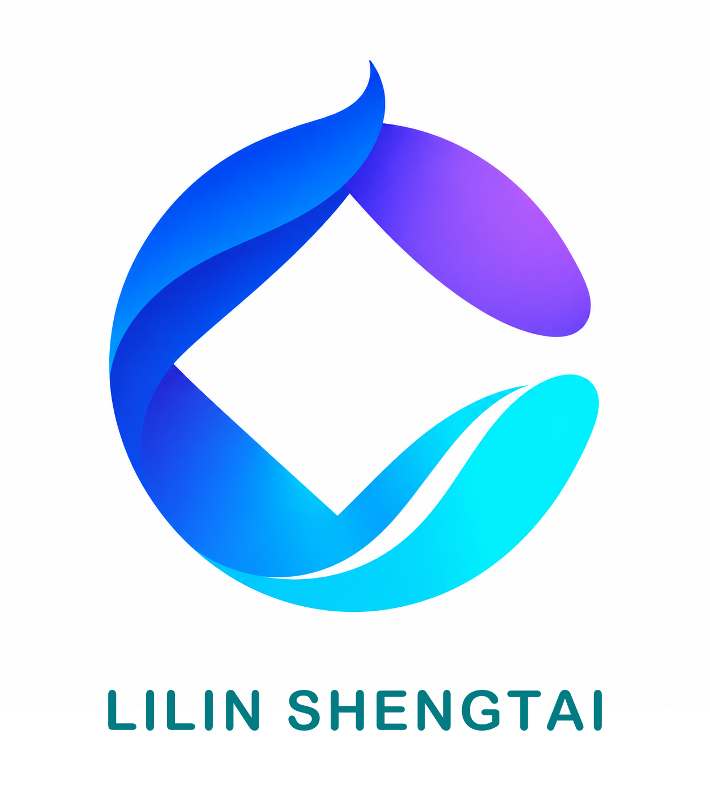
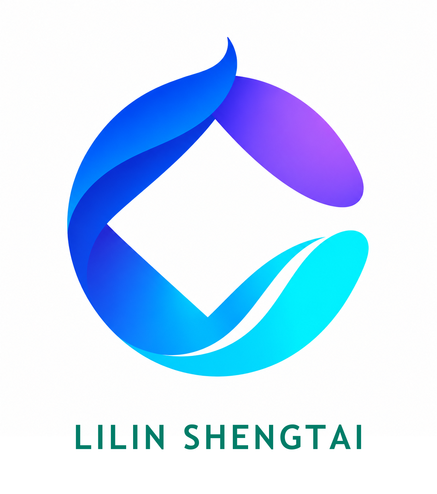
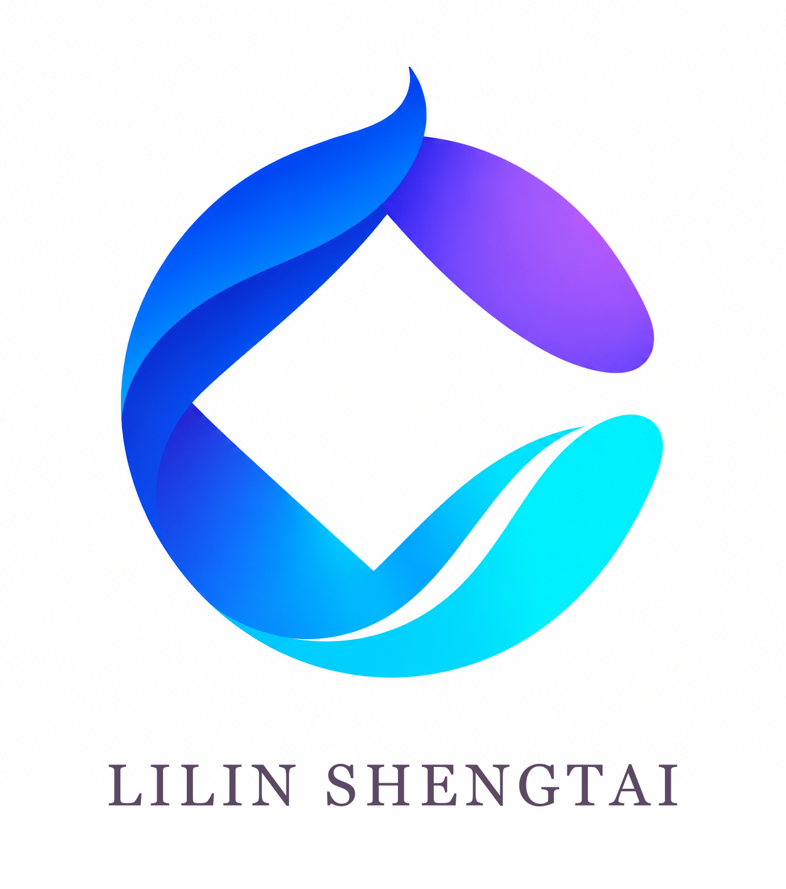
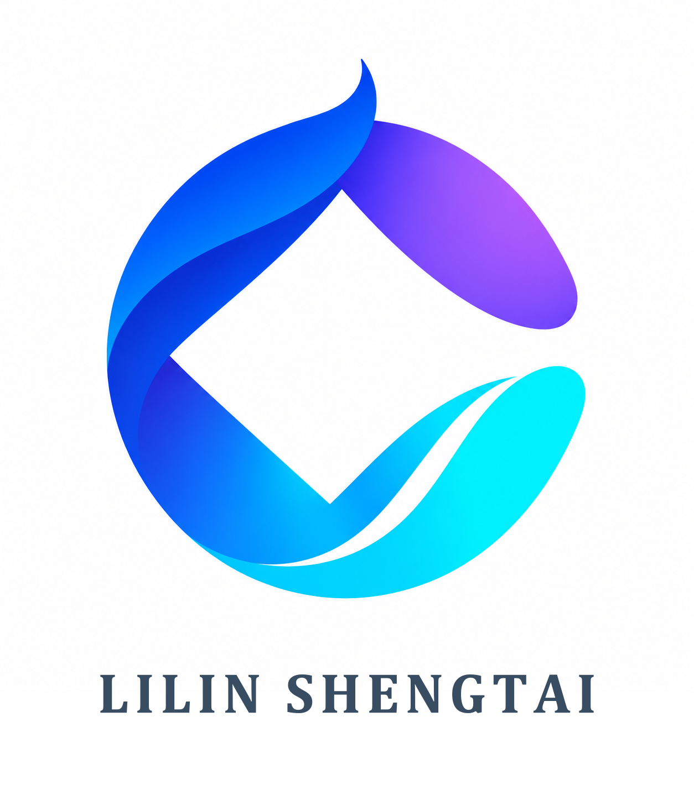
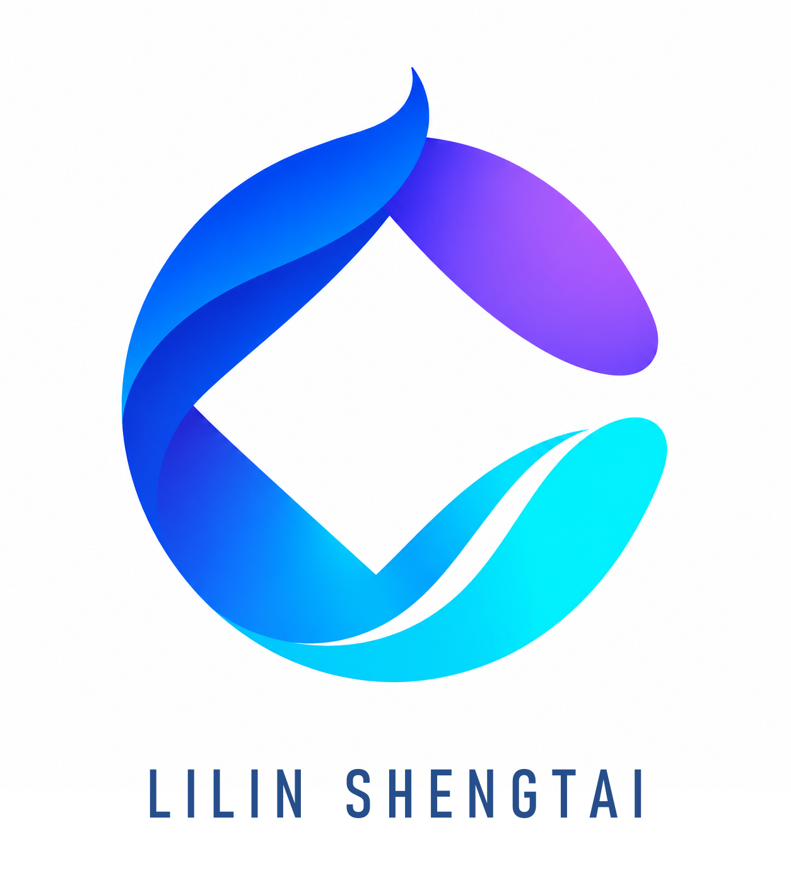
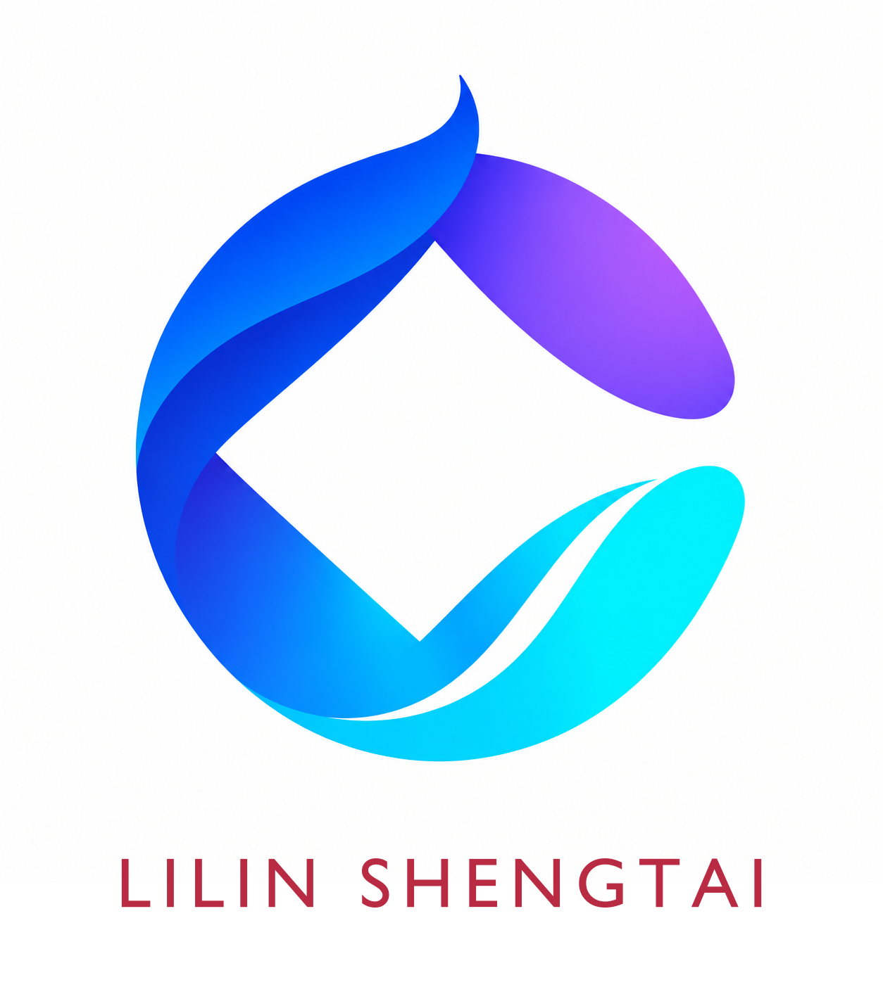
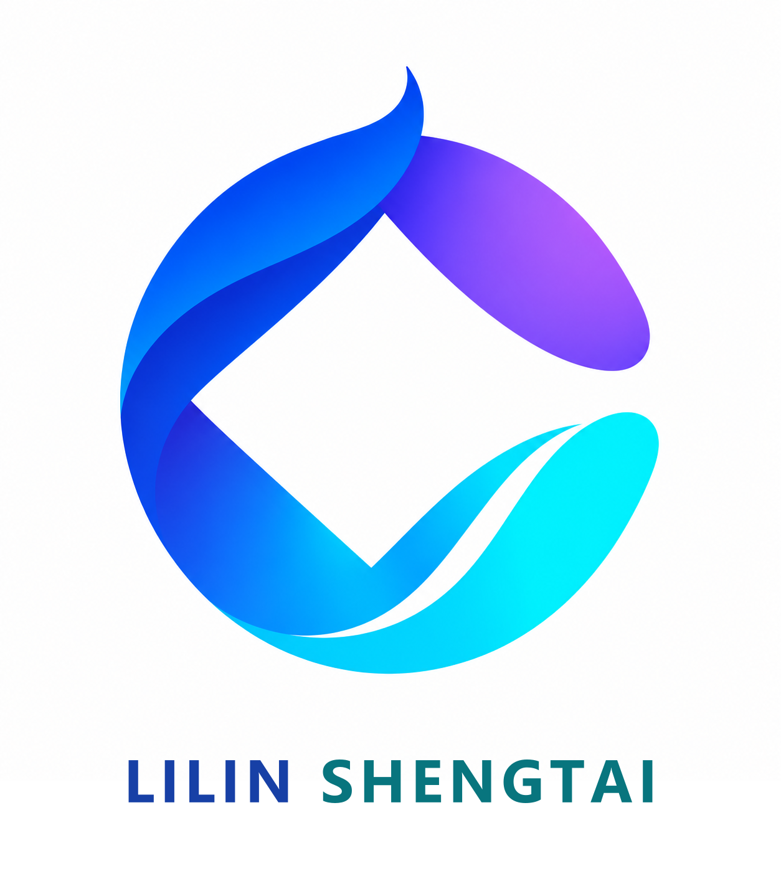

P01 均衡墨蓝

适中的字重与字距，让图标仍是视觉中心。
Segoe UI Semibold · #25354A
图标保持不变，比较下方LILIN SHENGTAI的字体、字重、字距和颜色。
适中的字重与字距，让图标仍是视觉中心。
Segoe UI Semibold · #25354A

规整的技术字形，呼应图标的蓝色，笔画更有力量。
Bahnschrift SemiBold · #1954B3

圆形几何骨架配宽字距，呈现清晰轻快的节奏。
Century Gothic · #56616F

圆润笔端配深青，呼应图标柔和的弧面。
Arial Rounded MT Bold · #027B83
人文无衬线与深海蓝，保持稳健而不显僵硬。
Gill Sans MT Bold · #24396D
厚实而紧凑，适合较小尺寸和简明品牌应用。
Franklin Gothic Demi · #164B61
开放字形和轻字重，营造更轻的文字层级。
Corbel Light · #3B727B
轻微斜体与柔和绿调，让文字有向前的动势。
Candara Italic · #436E5D

较有性格的无衬线字形与翠墨色，偏亲和软件品牌。
Trebuchet MS Bold · #007D68

克制的衬线字形配暗梅色，提供偏雅致的对照。
Georgia · #5C4964

有力的衬线与蓝灰色，表现稳重清楚的字标。
Cambria Bold · #394D62
轻字重、宽字距和钢蓝灰，文字退后，突出图形。
Calibri Light · #61748A

较高窄的字面配规整字距，形成技术型字标节奏。
Bahnschrift Condensed · #264E8B
厚字重与石墨色，适合强调辨识和落地使用。
Arial Black · #263139
轻盈的直立字形与中性灰，减少文字对图标的争夺。
Segoe UI Light · #646777

将亮红改成较沉静的朱红，保留红色方向但更克制。
Gill Sans MT · #B92B42
几何粗体配暖铜色，与冷色图形形成适度冷暖对照。
Century Gothic Bold · #9B6125
古典衬线配墨绿，作为人文气质的字体比较。
Garamond Bold · #415248
窄体厚笔画与蓝灰色，兼顾紧凑和可读性。
Arial Narrow Bold · #36486D

LILIN用深蓝、SHENGTAI用深青，分词呼应图标色彩。
Segoe UI Bold · #1740A6 / #08757E